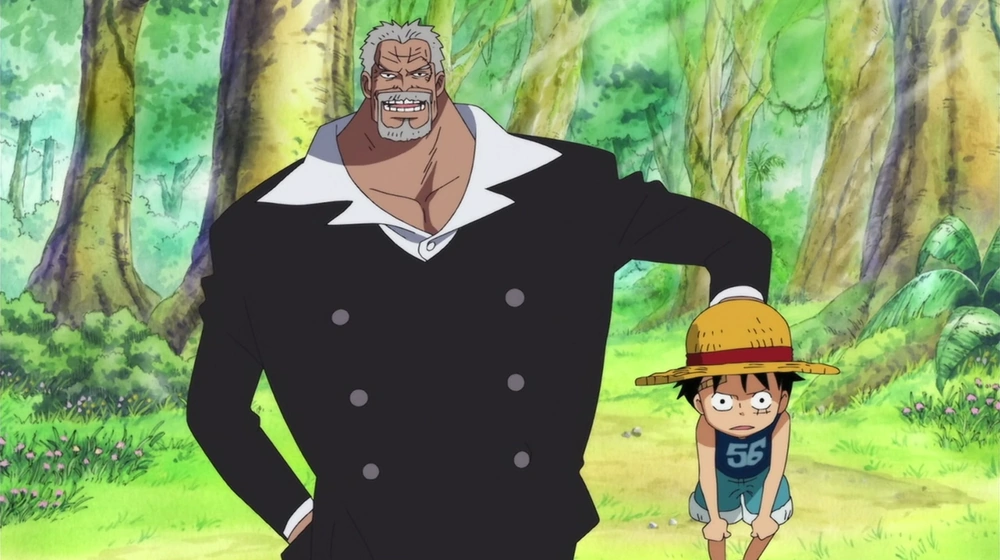

QUIZ INTERATIVO DE ANIME
Quiz de One Piece com perguntas do início, meio e fim do anime. Teste seu conhecimento =)
Jogar novamente
1 - Quem deu o Chapéu de Palha para Luffy?
Ussop
Shanks
Rayleigh
Naruto
2 - Qual o músico da tripulação do Luffy?
Franky
Zoro
Nami
Brook
3 - Quem treinou o Luffy durante 2 anos do time skip ?
Shanks
Rayleigh
Ace
Aokiji
4 - Qual o maior obstáculo dos usuários de uma Akuma no Mi?
Eles não podem se ferir
Eles não conseguem beber agua
Dificuldade para respirar
Eles não conseguem nadar
5 - Qual o cargo de Monkey D. Garp na Marinha?

Almirante
Vice-almirante
Capitão
General
Resultado